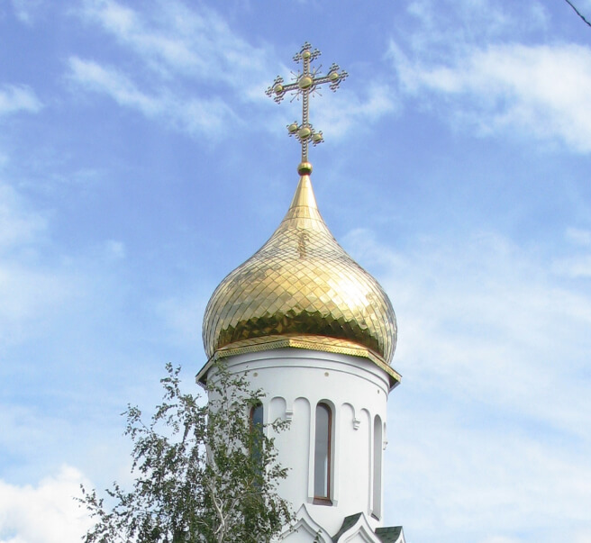

<section class="about">
    <div class="page__container">
        <div class="about__container">

            

            <div class="about__info">
                <div class="about__top">
                    <h3 class="subtitle">Общая информация</h3>
                    <h2 class="title">О нашем Храме</h2>
                </div>
                <div class="about__down">
                    <p>Храм открыт для посещений с 9:00 до 19:00 ежедневно без выходных и перерывов. Богослужения
                        совершаются в соответствии с Расписанием на текущий месяц.</p>

                    <p> В дни, когда проходят богослужения, храм открывается за 30 минут до начала богослужения.
                        Закрывается
                        храм после того, как заканчивается Таинство Исповеди (но не ранее 19:00).</p>

                    <p> Церковная лавка работает по такому же расписанию, только закрывается не позднее 19:00 (даже
                        тогда,
                        когда
                        в храме идет Исповедь).</p>

                    <p> Освящение автомобилей, крестиков, икон проходит каждую субботу в 16:00. Запись в Церковной
                        лавке.
                    </p>

                    <p> По вопросу освящения домов, верующие христиане могут обращаться к священнику на Исповеди или
                        после
                        любого богослужения.</p>
                </div>
            </div>
        </div>
    </div>
</section>